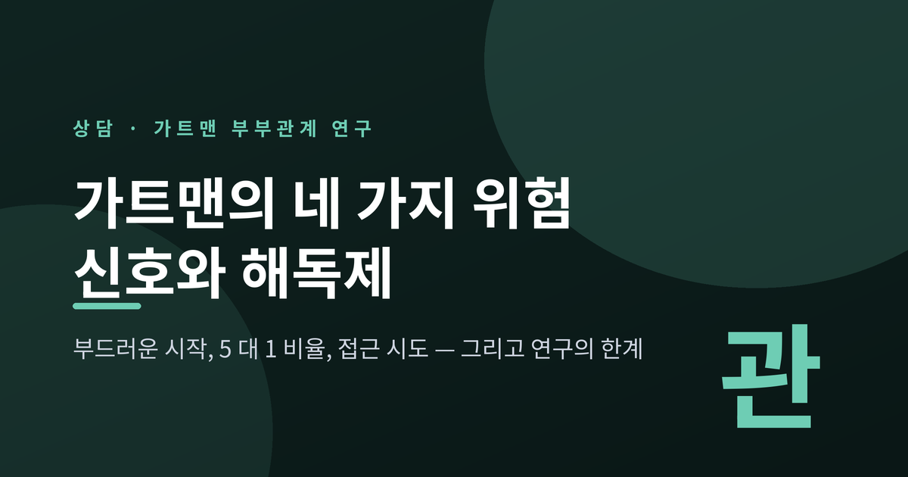
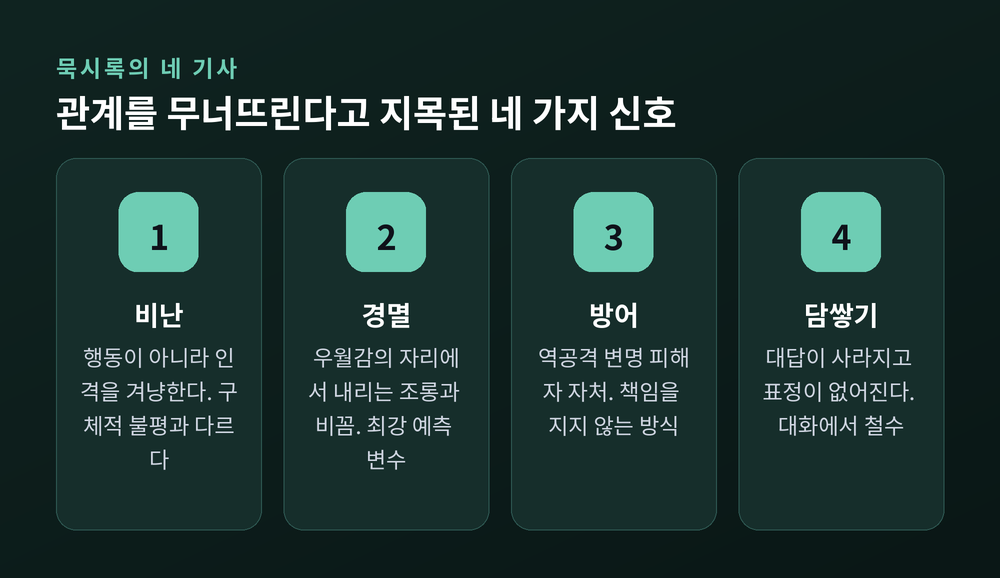
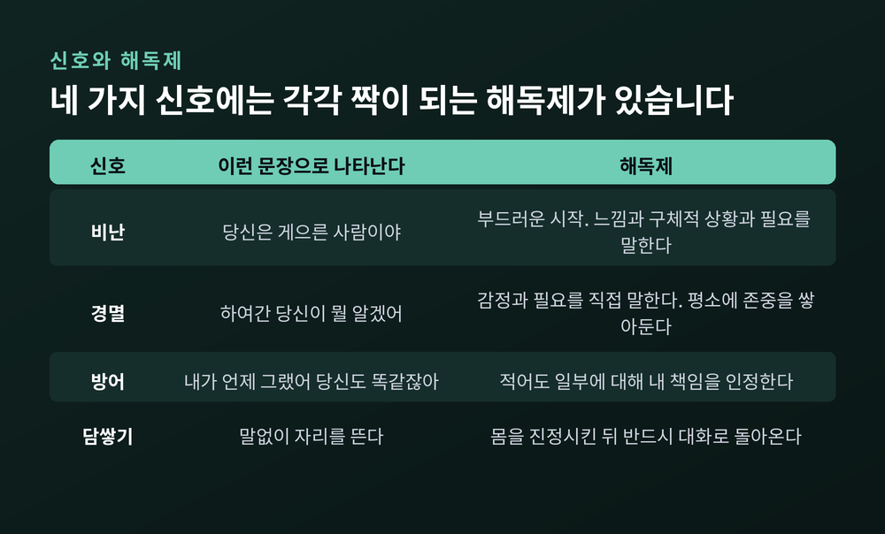
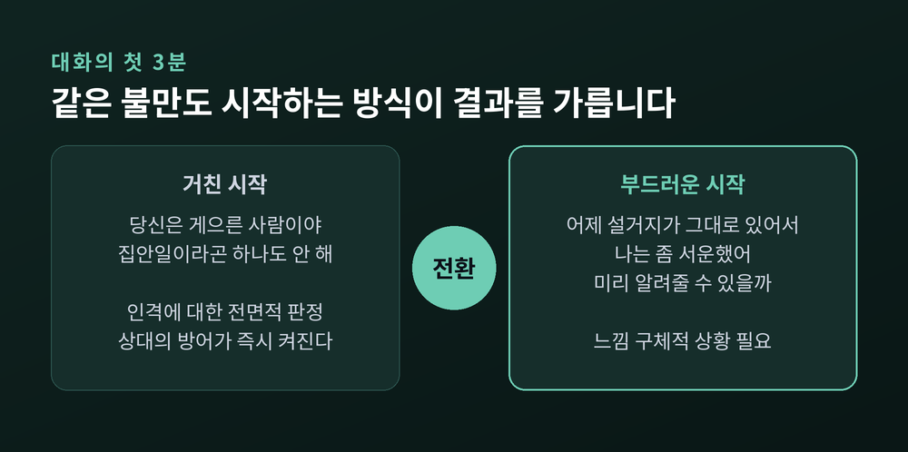
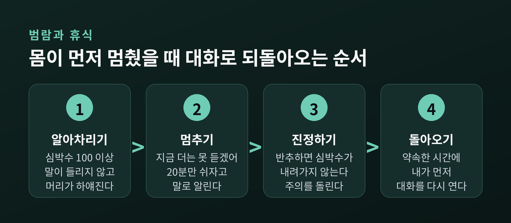
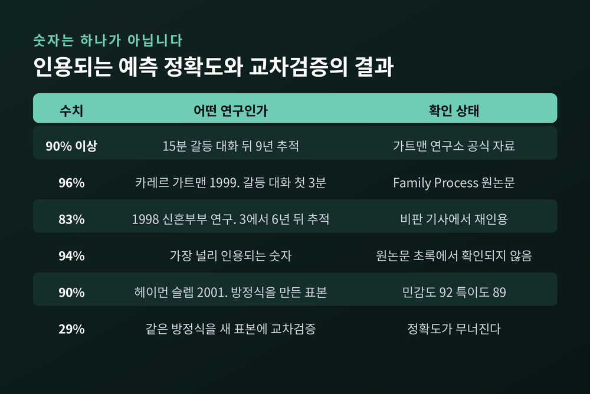

비난·방어·경멸·담쌓기의 해독제, 부드러운 시작과 5 대 1 비율, 그리고 연구의 한계

이번 글에서는 존 가트맨의 부부관계 연구를 정리해 보겠습니다. 관계를 무너뜨린다고 지목된 네 가지 신호와 그 해독제, 대화를 시작하는 방식, 5 대 1이라는 비율, 그리고 이 연구를 둘러싼 비판까지 함께 다루겠습니다. 특정 부부의 사례가 아니라 연구가 기술한 일반적인 패턴을 놓고 이야기하겠습니다.
가트맨과 로버트 레벤슨은 1970년대부터 부부를 관찰했습니다.
방식은 단순합니다. 부부를 실험실로 초대해 아직 풀리지 않은 갈등 주제를 15분간 이야기하게 합니다. 그 장면을 녹화하고, 표정과 말과 몸짓을 아주 작은 단위로 나누어 코딩합니다. 동시에 심박수 같은 생리 지표를 측정합니다. 그리고 몇 년 뒤 그 부부들이 어떻게 되었는지 다시 확인합니다.
1992년 논문은 73쌍을 1983년과 1987년 두 시점에 조사했습니다. 여기서 나온 개념이 '조절되는 부부'와 '조절되지 않는 부부'입니다. 후자는 부정 정서 표현이 많고 긍정 표현이 적었으며, 완고함과 철회와 방어가 두드러졌고, 결혼 만족도와 건강 지표가 모두 낮았습니다.
관찰의 초점이 '무엇을 두고 싸우는가'가 아니라 '어떻게 싸우는가'에 있었다는 점이 중요합니다.
가트맨 연구팀은 관계의 종말을 예고하는 네 가지 소통 방식을 지목하고, 여기에 '묵시록의 네 기사'라는 이름을 붙였습니다.

비난은 상대의 행동이 아니라 인격을 겨냥합니다. 불평과는 다릅니다. 불평은 구체적인 사건에 대한 것이고, 비난은 사람 전체에 대한 판정입니다. "어제 설거지가 그대로 있었어"와 "당신은 게으른 사람이야"의 거리입니다.
경멸은 도덕적 우월감의 자리에서 내려오는 비난입니다. 비꼼, 조롱, 한숨, 눈을 굴리는 동작이 여기 속합니다. 연구는 경멸을 이혼의 단일 최강 예측 변수로 보고했습니다. 나머지 셋보다 강했습니다.
방어는 책임을 지지 않는 방식입니다. 역공격, 변명, 피해자 자처가 여기 들어갑니다. 자신을 지키는 행동처럼 보이지만, 실제로 전달되는 메시지는 "문제는 내가 아니라 너"입니다.
담쌓기는 대화에서 셔터를 내리는 것입니다. 대답하지 않고, 표정이 사라지고, 자리를 뜹니다.
연구가 관찰한 것은 이 넷이 따로 나타나기보다 순서를 밟는다는 점이었습니다. 비난이 문을 열고, 비난이 습관이 되면 경멸이 뒤따르고, 경멸은 방어를 부르고, 방어로 아무것도 해결되지 않을 때 담쌓기가 자리를 잡습니다.
가트맨 모델의 실용적인 부분은 여기입니다. 네 가지 신호에는 각각 대응하는 해독제가 붙어 있습니다.

비난의 해독제는 부드러운 시작입니다. 경멸의 해독제는 감정과 필요를 직접 말하고, 평소에 상대에 대한 애정과 존중을 쌓아두는 것입니다. 방어의 해독제는 문제의 적어도 일부에 대해 책임을 인정하는 것입니다. 담쌓기의 해독제는 생리적으로 자기를 진정시킨 뒤 대화로 돌아오는 것입니다.
"내가 언제 그랬어, 당신도 지난주에 똑같이 했잖아"를 "맞아, 그 부분은 내가 놓쳤어"로 바꾸는 정도의 일입니다. 사소해 보이지만 대화의 방향이 완전히 달라집니다.
1999년 카레르와 가트맨이 발표한 연구는 갈등 대화의 첫 3분에 주목했습니다.
결과는 이렇습니다. 첫 3분의 양상만으로 그 대화가 어떻게 끝날지를 96% 맞혔다고 보고했습니다. 6년 추적에서 이혼한 17쌍은 예외 없이 부정 정서가 많고 긍정 표현이 적은 상태로 대화를 시작했습니다.
여기서 나온 개념이 거친 시작과 부드러운 시작입니다.

부드러운 시작은 세 부분으로 이루어집니다. 나는 이렇게 느낀다, 이 구체적인 상황에 대해, 내가 필요한 것은 이것이다. 이 순서를 지키면 상대의 방어 시스템이 덜 켜집니다.
다만 형식만 빌리는 것으로는 되지 않습니다. "나는 당신이 내 말을 절대 안 듣는다고 느껴"는 '나'로 시작했지만 여전히 거친 시작입니다. 주어가 여전히 당신이고, 여전히 상대를 탓하고 있기 때문입니다.
같은 연구에서 흥미로운 대목이 하나 더 있습니다. 아내의 거친 시작은 그 앞선 '하루 일과 나누기' 대화에서 남편이 보인 무관심이나 짜증으로 예측되었다는 것입니다. 갈등은 갈등이 시작되기 전부터 준비되고 있었던 셈입니다.
가트맨 연구소가 가장 널리 알린 숫자는 5 대 1입니다.
갈등 상황에서 부정적인 상호작용 한 번당, 안정적인 관계는 긍정적인 상호작용을 다섯 번 이상 한다는 것입니다. 반대로 그 비율이 1 대 1 이하로 떨어지면 위험 신호로 봅니다.
주목할 점은 이 비율이 갈등이 없는 상태를 가리키지 않는다는 것입니다. 건강한 관계에서도 부정적인 순간은 일어납니다. 차이는 그것이 빠르게 회복되어 인정과 공감으로 대체된다는 데 있습니다.
가트맨은 분노 자체를 문제로 보지 않았습니다. 그는 분노가 "비난이나 경멸과 함께 표현되거나 방어적일 때에만" 관계에 해롭다고 썼습니다.
긍정적 상호작용의 목록도 거창하지 않습니다. 관심을 보이며 되묻기, 눈을 맞추고 끄덕이기, 애정을 표현하기, 동의할 수 있는 지점을 찾기, 공감하고 사과하기, 상대의 관점이 타당하다고 인정하기. 마지막 항목에는 단서가 붙습니다. 인정은 동의가 아닙니다. 동의하지 않으면서도 "당신 입장에서는 그럴 만하다"고 말할 수 있습니다.
가트맨 연구에서 가장 조용하지만 오래 남는 개념은 '접근 시도'입니다. 원어로는 bid입니다.
관심, 인정, 애정, 그 밖의 어떤 연결이든 상대에게 구하는 모든 시도가 여기 해당합니다. "이 기사 좀 봐"라는 한마디, 잠깐의 눈길, 작은 한숨도 접근 시도입니다.
반응은 세 갈래로 나뉩니다. 알아차리고 응답하는 향함, 알아차리지 못하거나 흘려보내는 외면, 짜증이나 적대로 되받는 맞섬입니다.
신혼부부를 6년 뒤 추적한 결과가 자주 인용됩니다. 결혼을 유지한 부부는 상대의 접근 시도에 86% 향했고, 이혼한 부부는 평균 33%에 그쳤습니다.
거창한 사건이 관계를 결정하는 것이 아니라는 뜻입니다. 연구소가 내건 표어는 "작은 것을 자주"입니다.
담쌓기를 냉정함으로 오해하기 쉽습니다. 연구가 관찰한 것은 그 반대에 가까웠습니다.
가트맨은 이 상태를 확산성 생리적 각성, 흔히 범람이라 부릅니다. 심박수가 100을 넘고, 아드레날린이 분비되고, 혈압이 오릅니다. 교감신경계의 투쟁-도피 반응이 켜진 상태입니다.
이때는 경청과 공감, 상대의 입장에서 보는 능력, 문제 해결을 담당하는 뇌 기능이 차례로 꺼집니다. 아무리 애를 써도 상대의 말이 물리적으로 들리지 않습니다. 담쌓기는 무시가 아니라 과부하된 신경계의 셧다운에 가깝습니다.

처방은 명확합니다. 대화를 멈추고, 최소 20분의 휴식을 갖고, 자기를 진정시킨 뒤 돌아옵니다.
20분이라는 숫자에는 근거가 있습니다. 가트맨의 설명에 따르면 주요 교감신경 전달물질인 노르에피네프린은 이를 분해할 효소가 없어 혈류를 통해 확산되어야 하고, 심혈관계에서 이 과정에 20분 이상이 걸립니다.
여기에 한 가지 결정적인 단서가 붙습니다. 휴식 시간에 반추하면 심박수는 내려가지 않습니다. 싸움을 머릿속으로 다시 재생하고, 할 말을 연습하고, 자기 논리를 보강하는 동안에는 각성이 그대로 유지됩니다. 20분은 그 시간 동안 갈등에서 실제로 주의를 돌렸을 때에만 유효한 숫자입니다.
그래서 "잠깐 나갔다 올게"보다 "지금 머리가 하얘져서 더는 들리지가 않아, 20분만 쉬었다가 이어서 이야기하자"가 낫습니다. 앞의 문장은 담쌓기로 읽히고, 뒤의 문장은 휴식 요청으로 읽힙니다.
가트맨은 회복 시도를 이렇게 정의했습니다. 부정성이 통제 불능으로 치닫는 것을 막는 모든 진술이나 행동. 우스꽝스러운 것이든 아니든 상관없습니다.
농담 한마디, 손을 잡는 동작, "잠깐, 내가 말을 심하게 했어"라는 문장, "우리 원래 이 얘기 하려던 게 아니었잖아"라는 확인. 모두 회복 시도입니다.
관계를 잘 유지하는 커플과 결국 헤어지는 커플의 차이는 얼마나 싸우느냐가 아니었습니다. 어떻게 싸우고 얼마나 빨리 회복하느냐였습니다. 전자는 갈등이 없는 사람들이 아니라, 회복 시도를 이르게 그리고 자주 하는 사람들이었습니다. 한 번의 대화 안에서 수십 번씩 하기도 합니다.
다만 회복 시도에는 던지는 쪽만 있는 것이 아닙니다. 받는 쪽도 있어야 합니다. 경멸이 오래 누적된 관계에서는 회복 시도가 던져져도 상대에게 도달하지 않습니다. 그래서 회복은 기술의 문제이자 동시에 잔고의 문제입니다.
한 가지 더 언급할 만한 발견이 있습니다. 부부 갈등의 69%는 '영구적 문제'에 관한 것이라는 보고입니다. 성격이나 생활 방식의 근본적인 차이에서 나오는, 끝내 풀리지 않는 주제들입니다. 행복한 부부에게도 이 문제는 있습니다. 차이는 해결 여부가 아니라, 그 문제를 두고 대화를 계속 이어갈 수 있느냐에 있었습니다.
여기까지가 널리 알려진 내용입니다. 이제 덜 알려진 쪽을 말씀드려야 하겠습니다.
가장 먼저 눈에 띄는 것은 '정확도' 숫자가 하나가 아니라는 점입니다.

90% 이상, 94%, 93.6%, 83%, 96%. 매체마다 다른 숫자가 등장합니다. 연구도 표본도 추적 기간도 다르기 때문입니다. 단일한 '가트맨의 정확도'라는 것은 존재하지 않습니다.
더 무거운 지적은 방법론 자체를 향합니다.
저널리스트 로리 에이브러햄은 이렇게 정리했습니다. 연구팀은 이미 몇 년 뒤 부부들의 혼인 상태를 알고 있는 상태에서, 그 정보와 영상에서 코딩한 소통 패턴을 함께 넣고, 세 집단을 가장 잘 구분하는 방정식을 만들어 달라고 요청했습니다. 이것은 미래에 대한 예측이 아니라 결과를 이미 아는 상태에서 만든 사후 공식입니다. 과학적 방법이 요구하는 다음 단계, 즉 새로운 표본에 그 방정식을 적용해 실제로 작동하는지 확인하는 절차가 빠져 있었습니다.
이 지적을 실제 데이터로 시연한 논문이 헤이먼과 스미스 슬렙의 2001년 연구입니다. 이들은 아카이브 자료로 예측식을 만들었습니다. 방정식을 만든 그 표본에서는 전체 정확도 90%, 민감도 92%, 특이도 89%가 나왔습니다. 그런데 같은 방정식을 새로운 데이터에 적용하자 정확도가 29%로 무너졌습니다. 결론은 교차검증을 거치지 않은 예측 연구의 결과는 극도로 신중하게 해석해야 한다는 것이었습니다.
가트맨 측은 2007년에 이 비판에 대응한 것으로 언급됩니다. 헤이먼도 같은 해 후속 논평을 실었습니다. 논쟁은 아직 정리되지 않았다고 보는 편이 정확합니다.
한계는 더 있습니다. 기초 연구의 상당 부분이 백인, 중산층, 이성애 부부를 중심으로 수행되었습니다. 다른 인구 집단으로 일반화할 수 있는지는 별개의 문제입니다. 또 어떤 패턴이 관계 결과와 연결되는지를 밝히는 관찰 연구는 방대하지만, 그 패턴에 기반해 만든 치료가 실제로 도움이 되는지를 검증하는 개입 연구는 아직 따라잡는 중입니다. 가트맨 방법 전체를 검증한 대규모 독립 무작위 대조시험은 다른 부부치료 접근에 비해 여전히 적습니다.
정리하면 이렇습니다. 네 가지 신호와 5 대 1과 접근 시도는 관계의 미래를 알아맞히는 점술이 아닙니다. 관찰된 상관을 잘 정리한 기술(記述)에 가깝습니다. 그 정도로 받아들일 때 오히려 쓸모가 있습니다.
이 글에서 가장 중요한 문단일지 모르겠습니다.
가트맨 관점에서도 친밀 관계 폭력은 두 유형으로 구분됩니다. 논쟁 중 충동 통제를 잃어 발생하고 대체로 상호적이며 후회가 뒤따르는 상황적 폭력과, 폭력에 더해 경제적 종속, 협박, 고립시키기 같은 체계적인 통제 전술이 동반되는 성격적 폭력입니다.
후자의 경우 부부 상담을 시작하는 것은 무책임하고 비윤리적이며 위법일 수도 있다고 명시됩니다. 상담 중 한쪽이 한 진술에 대해 상대가 보복할 위험이 있기 때문입니다.
관계 안에 폭력이 있거나, 협박과 감시와 고립이 있거나, 반복적인 모욕과 가스라이팅이 있다면 지금 필요한 것은 부드러운 시작이나 5 대 1이 아닙니다. 안전 확보와 분리, 그리고 전문 기관의 개입입니다. 이 경우 '대화 기술'을 시도하는 것은 도움이 되지 않을 뿐 아니라 위험할 수 있습니다.
끝으로 한 마디만 더 드리겠습니다.
가트맨 연구를 읽고 나면 자기 관계를 채점하고 싶어집니다. 우리는 몇 대 몇인가, 네 기사 중 몇이 우리 집에 와 있는가. 그러나 이 연구가 실제로 가리키는 곳은 점수가 아니라 방향입니다. 대화를 어떻게 시작하는가, 상대가 던진 작은 말에 어떻게 답하는가, 무너진 뒤에 얼마나 빨리 손을 내미는가.
예전에는 관계가 큰 사건으로 결정된다고 생각했습니다. 지금은 스쳐 지나가는 짧은 순간들이 더 많은 것을 정한다고 생각합니다.
혼자 읽고 혼자 고치기 어려운 주제이기도 합니다. 관계의 어려움이 오래 이어지거나, 대화를 시도할 때마다 같은 지점에서 무너진다면 부부·가족 상담 전문가나 정신건강의학과 전문의의 도움을 받아보시길 권합니다. 다만 앞서 말씀드린 대로 폭력이나 정서적 학대가 있는 상황이라면 부부 상담이 아니라 안전을 위한 전문 기관의 도움이 먼저입니다. 국내에서는 여성긴급전화 1366, 정신건강 상담전화 1577-0199를 통해 상담과 연계 안내를 받으실 수 있습니다.
무엇을 바꿔야 하느냐고 물으신다면, 다음 대화의 첫 3분이라고 답하겠습니다.